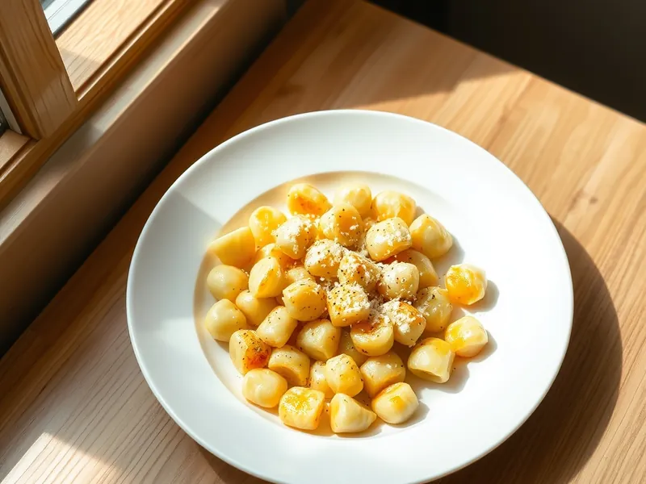

Ньокки из вчерашнего картофельного пюре
Мягкие картофельные клёцки из остатков пюре, обжаренные в сливочном масле с пармезаном
30 мин2 порц.650 ккал на порциюБ 20 · Ж 28 · У 78Итальянская кухня
Открыть в приложении: порции, таймеры, список покупок
Продукты на 2 порц.
- Картофель отварной / пюре (остался)400 г
- Мука пшеничная130 г
- Яйцо куриное1 шт
- Сливочное масло40 г
- Пармезан30 г
- Соль2 щеп.
- Перец чёрный молотый1 щеп.
- Чеснок по желанию1 зуб.
Как готовить
- Разомните холодное пюре вилкой до гладкости, добавьте яйцо и соль, затем постепенно вмешивайте муку, пока тесто не перестанет липнуть к рукам. Долго не месите, иначе ньокки станут резиновыми.
- Разделите тесто на 4 части, раскатайте на присыпанном мукой столе колбаски толщиной 2 см и нарежьте кусочками по 2 см.
- Опускайте ньокки в кипящую подсоленную воду порциями и варите 2 минуты после того, как они всплывут. Достаньте шумовкой.
- Растопите масло на сковороде на среднем огне, добавьте раздавленный чеснок, выложите ньокки и обжарьте 3-4 минуты до лёгкой золотистой корочки.
- Посыпьте тёртым пармезаном и чёрным перцем.
Совет. Если пюре было на молоке с маслом, оно влажнее, и муки понадобится больше: ориентируйтесь на тесто, которое не липнет, а не на точный вес.